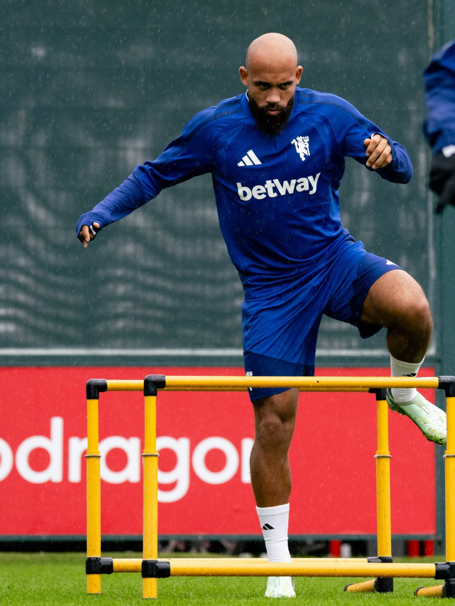

Carrick’s Struggling United Head to Madrid Seeking a Lift Against Atlético
Sports
Manchester United arrive at the Metropolitano tonight carrying the weight of a troubled league campaign, and in need of something to lift the mood around Michael Carrick’s team. Six points from six Premier League games is their poorest opening since 1986-87, and Saturday’s 1-1 home draw with Tottenham left them winless in four, with boos echoing around Old Trafford at full time. Kick-off in Madrid is at 10:00 pm East Africa Time, 8:00 pm in the UK.
Their form in the Champions League has been far more encouraging. A 4-0 victory over Sabah in the opening round of the new 36-team league phase has put United fourth in the standings with three points. At home, the picture is bleaker. One win in six has left them 13th, 12 points behind leaders Manchester City, and their results read a defeat at Hull, a 5-2 win at Ipswich, a 2-2 draw with Everton, a loss to City, and draws with Fulham and Tottenham.
Atlético, meanwhile, offer a study in contrast. They sit 25th in the European table with no points after a 2-1 defeat at Liverpool, yet in La Liga they have won four in a row, a run that includes a 2-1 derby victory over Real Madrid and another by the same score at Alavés on Saturday. Their 19 points leave them second, behind Barcelona, who have won all eight of their games.
United will also be wary of the history between the clubs. They have never beaten Atlético in a competitive fixture, and the sides last met in the 2021-22 Champions League last 16. The first leg in Madrid ended 1-1, and Atlético progressed after winning 1-0 at Old Trafford.
Team news favours the hosts. Atlético are expected to have a full squad, with no injuries or suspensions reported. United are without five players by one account, though other outlets count six. Matthijs de Ligt has returned to the travelling party, and young defender Dan Armer is also in the group. Predicted line-ups suggest Manchester United will line up in a 4-2-3-1 with Lammens in goal, Dalot, Martínez, Maguire and Yoro in defence, Santos and Tielemans in midfield, and Rashford, Fernandes and Mbeumo behind Cunha. Atlético are tipped to play a 4-4-2 built around Oblak, with Pubill, Romero, Hancko and Grimaldo in front of him, a midfield of G. Simeone, Barrios, Koke and Baena, and Álvarez partnering Kang-in Lee up front. These are only forecasts, with confirmed teams usually released about an hour before kick-off, and some outlets expect Carrick to make changes.
Diego Simeone, for his part, has refused to treat United’s slump as a reason for comfort. He has warned his players that the visitors are a very aggressive side capable of making things difficult, and reminded them that this is still Manchester United.
The statistical models lean towards the Spanish side, giving Atlético a 49 per cent chance of victory, against 26 per cent for United and 25 per cent for a draw. The stakes differ for each club. A result in Madrid would ease a difficult week for United, while a win would lift Atlético out of the bottom half of the table after their loss at Anfield.
Attention will turn quickly to the weekend. Atlético travel to Espanyol on Saturday, then to Stuttgart in the Champions League on 20 October. United go to Leeds on Sunday, with kick-off at 4:00 pm East Africa Time, before an away European tie at Como on 21 October.